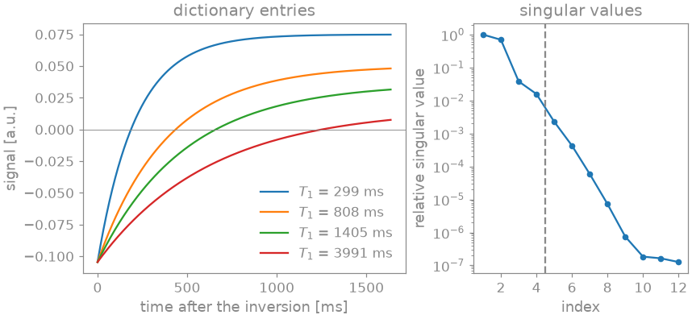
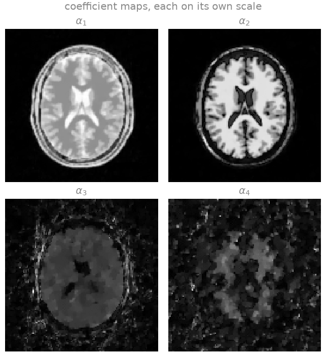
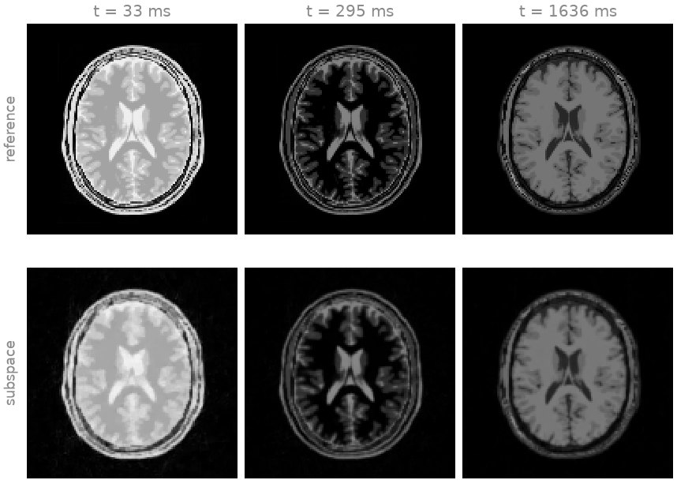
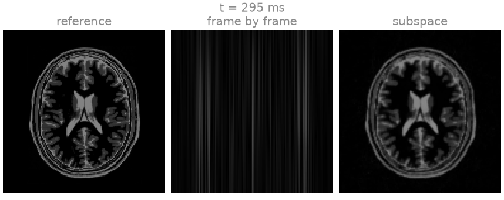
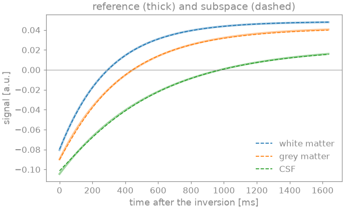
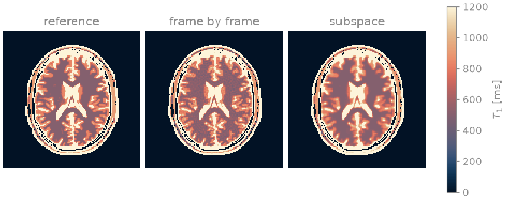
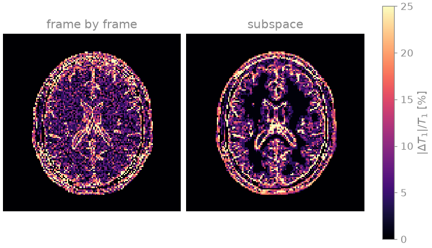

Note
Go to the end to download the full example code.
Subspace-constrained T1 mapping#
This example estimates a \(T_1\) map from a single continuous inversion-recovery acquisition in which each of four hundred time points is encoded by one radial spoke. The aim is to show how a signal model turns a hopelessly undersampled time series into a well-posed reconstruction: the recovery curves of all plausible \(T_1\) values span a subspace of low dimension, and reconstructing the few coefficients of that subspace instead of the individual frames reduces the number of unknowns by two orders of magnitude.
The sequence is an inversion pulse followed by a train of spoiled gradient echoes with a small flip angle, each echo read out along one golden-angle spoke, as in MPnRAGE and radial Look-Locker methods. The longitudinal magnetization recovers from inversion towards a steady state at an apparent rate that depends on \(T_1\), the flip angle and the repetition time, so each voxel follows one of a family of recovery curves. The family is simulated as a dictionary, and its dominant singular vectors \(\Phi\) form the basis of a subspace [1]. The time series is written as \(x_t = \sum_a \Phi_{at} \alpha_a\), and the basis enters the encoding on the k-space side, between the transform of each frame and its samples:
The coefficient maps \(\alpha_a\) are reconstructed under a total-variation penalty, any frame of the series can be synthesized from them, and \(T_1\) is estimated by matching each voxel’s coefficients against the dictionary.
The phantom and the coil sensitivities are built as in From k-space to image; the cell that does it is hidden on this page and present in the script this page can be downloaded as.
Prerequisites. Radial SENSE reconstruction and Parameter maps straight from k-space.
Learning objectives
Simulate a dictionary of inversion-recovery curves and extract a low-dimensional subspace from it by the singular value decomposition.
Include a subspace basis in a non-Cartesian encoding.
Reconstruct coefficient maps under a total-variation penalty, and synthesize images at any inversion time from them.
Estimate \(T_1\) by dictionary matching in the subspace, compare it with matching frames reconstructed one at a time, and identify the partial-volume bias of a voxelwise fit.
The frames of Dynamic golden-angle radial MRI are constrained here by a linear signal model; Parameter maps straight from k-space fits a nonlinear one directly to k-space.
import csv
from pathlib import Path
import brainweb_dl
import numpy as np
import torch
from blochsim.simulators import MPnRAGESimulator
from brainweb_dl import get_mri
import bartorch
import bartorch.tools as bt
from bartorch import linop, optim, priors
SIZE = 128
COILS = 8
FRAMES = 400
RANK = 4
TR = 4.1 # ms
FLIP = 6.0 # degrees
The dictionary and its subspace#
The dictionary is simulated rather than tabulated: one curve per
\(T_1\), from the sequence that will be played.
MPnRAGESimulator is that sequence – an
inversion followed by a spoiled gradient-echo train with every shot read –
and simulate evaluates it over an array of parameters at once, giving
(entries, frames).
The same object serves the fit: handed to bartorch.nlop.Bloch() it is
a model operator, which is how Parameter maps straight from k-space
solves for the maps directly. Here only its forward evaluation is wanted.
t1_values = torch.linspace(100.0, 4500.0, 200) # ms
sequence = MPnRAGESimulator(nshots=FRAMES, flip=FLIP, TR=TR)
dictionary = torch.as_tensor(sequence.simulate(T1=t1_values))
left = torch.linalg.svd(dictionary.T.to(torch.complex64), full_matrices=False)[0]
basis = left[:, :RANK].T.contiguous()
print(f"dictionary {tuple(dictionary.shape)}, basis {tuple(basis.shape)}")
dictionary (200, 400), basis (4, 400)
The left panel shows a few entries of the dictionary: the signal starts negative after the inversion, passes through zero at a time that grows with \(T_1\), and approaches the steady state of the gradient-echo train. The curves are smooth and similar to each other, so a few singular vectors represent them all. The singular values in the right panel decay by more than two orders of magnitude over the first four, and the rank used here, four, is marked by the dashed line. The rank is a modelling decision: too few coefficients bias the recovered curves toward the span of the basis, too many increase the number of unknowns the undersampled data must determine.

Phantom#
Each tissue class is given the \(T_1\) of the BrainWeb table and its own curve from the same signal model, and the series is the membership-weighted sum of them. A voxel holding two tissues therefore follows a sum of two recovery curves, which is not itself an inversion-recovery curve – the partial-volume error any voxelwise fit carries.
Acquisition and reconstruction#
One golden-angle spoke per repetition time, four hundred of them in
1.64 s after the inversion. Each frame is sampled by a single spoke, about
\(1/200\) of what a fully sampled frame needs; together the spokes of
the train cover k-space densely. The trajectory indexes frames as well as
samples, and the image the encoding operator maps from is the four
coefficient maps rather than the four hundred frames, with basis
contracting the one into the other. Complex Gaussian noise of variance
\(10^{-5}\) per sample is added to the simulated samples, which puts the
signal-to-noise ratio of white matter, in a fully sampled image of the
steady state, at the value printed below.
trajectory = bt.traj(readout=SIZE, spokes=FRAMES, radial=True, golden=True)
trajectory = trajectory.reshape(FRAMES, 1, SIZE, 3)
frames = linop.NoncartesianSense(sensitivities, (FRAMES, SIZE, SIZE), traj=trajectory)
measured = bt.noise(frames(series), n=1e-5, s=5)
A = linop.NoncartesianSense(sensitivities, (RANK, SIZE, SIZE), traj=trajectory, basis=basis)
print(f"{A.ishape} -> {A.oshape}")
print(A.plan)
white-matter SNR of a fully sampled steady-state image: 15
(4, 128, 128) -> (8, 400, 1, 128)
Plan(transform=nufft, image=sensitivities, kspace=basis, contraction=subspace(4), normal=kernel, coil_batch=1, streamed=coils, executor=slab)
plan.contraction reports the subspace and its rank, and the normal
operator is a point spread function over the basis as well as the
trajectory, so an iteration does not transform the four hundred frames.
The penalty is the total variation [2] of each coefficient map over the two spatial axes. A tissue follows one recovery curve throughout, so its coefficients are piecewise constant, and the noise, which the data determine least well in the coefficients of the weaker singular vectors, is not. A locally low-rank penalty [3] over blocks of voxels is the other common choice; a block that straddles two tissues is rank two, and shrinking its second singular value mixes their curves and biases the fitted \(T_1\) towards the neighbouring tissue.
The ADMM penalty parameter rho weights the auxiliary variable, which
starts at zero, against the data in each update of the coefficients. At
the default of 0.5 the coefficients of the weaker singular vectors, which
carry the differences between recovery curves, are still biased towards
zero after forty iterations, and the fitted \(T_1\) with them; 0.05
lets the data determine them within that number of iterations.
data = measured / optim.data_scaling(measured[..., None], A=A)
term = priors.TotalVariation(axes=(-1, -2), weight=0.001)
coefficients = optim.ADMM(term, maxiter=40, rho=0.05)(data, A)
recovered = torch.einsum("af,ayx->fyx", basis.to(torch.complex64), coefficients)
The frames reconstructed one at a time are the reference point: the density-compensated adjoint of the encoding without the basis, which is the gridding reconstruction of each frame from its single spoke.
weights = torch.linalg.norm(trajectory.real[..., :2], dim=-1).clamp(min=0.25)
gridded = frames.H(measured * weights.to(torch.complex64))
for name, estimate in (("frame by frame", gridded), ("subspace", recovered)):
print(
f"{name:>14} NRMSE of the series {bt.nrmse(series.abs(), estimate.abs(), scaled=True):.3f}"
)
frame by frame NRMSE of the series 1.621
subspace NRMSE of the series 0.145
Parameter fit#
The recovered coefficients are matched against the dictionary projected onto the same subspace, by the normalized inner product, which is dictionary matching performed in four dimensions rather than four hundred. Matching in the subspace and matching the reconstructed curves differ only by the component of the dictionary the basis discards. The frame-by-frame series has no subspace, and is matched against the dictionary itself.
def match(voxels, atoms):
"""The T1 of the dictionary atom with the largest normalized inner product."""
voxels = voxels.reshape(len(atoms), -1)
voxels = voxels / voxels.norm(dim=0, keepdim=True).clamp(min=1e-12)
atoms = atoms / atoms.norm(dim=0, keepdim=True)
return t1_values[(atoms.conj().T @ voxels).abs().argmax(0)].reshape(SIZE, SIZE)
t1_map = match(coefficients, basis.to(torch.complex64) @ dictionary.T.to(torch.complex64))
t1_gridded = match(gridded, dictionary.T.to(torch.complex64))
The fit is reported where the proton density is high enough for a curve to be defined, and separately in the interior of each tissue class: the voxels one class dominates, less a one-voxel rim, so that the numbers are not those of partial volume.
support = occupancy > 0.2 * float(occupancy.max())
dominant = memberships.argmax(0)
pure = support & (memberships.max(0).values > 0.7)
def erode(mask):
"""The mask less a one-voxel rim."""
return -torch.nn.functional.max_pool2d(-mask.float()[None], 3, 1, 1)[0] > 0
core = {index: erode(pure & (dominant == index)) for index in CLASS.values()}
interior = torch.stack(list(core.values())).any(0)
print(f"{'':>13} {'table':>7} {'frame by frame':>14} {'subspace':>8} [ms]")
for name, index in CLASS.items():
selected = core[index]
if int(selected.sum()) < 20:
continue
print(
f"{name:>13} {tissue_t1[index]:7.0f} {float(t1_gridded[selected].median()):14.0f}"
f" {float(t1_map[selected].median()):8.0f} ({int(selected.sum())} voxels)"
)
white = core[CLASS["WM"]]
for name, estimate in (("frame by frame", t1_gridded), ("subspace", t1_map)):
relative = (estimate - T1).abs() / T1.clamp(min=1.0)
print(
f"{name:>14} mean relative T1 error: interior {float(relative[interior].mean()):.3f},"
f" whole head {float(relative[support].mean()):.3f};"
f" white-matter standard deviation {float(estimate[white].std()):.0f} ms"
)
table frame by frame subspace [ms]
CSF 2569 2289 2598 (68 voxels)
GM 833 852 830 (76 voxels)
WM 500 520 498 (1143 voxels)
MUSCLE/SKIN 900 896 896 (22 voxels)
frame by frame mean relative T1 error: interior 0.057, whole head 0.099; white-matter standard deviation 29 ms
subspace mean relative T1 error: interior 0.012, whole head 0.092; white-matter standard deviation 6 ms

Each coefficient map is the weight of one singular vector of the dictionary. The first resembles a proton-density-weighted image, since the first singular vector is close to the mean recovery curve; the later ones encode the differences between the curves of short and long \(T_1\), and are not images of a tissue contrast. The basis is orthonormal, so the noise is spread over the four maps alike while the signal falls with the singular value: the fourth map has the lowest signal-to-noise ratio of the four.
Images at any inversion time#
The coefficient maps determine the whole series: multiplying by the basis synthesizes the image at every one of the four hundred time points, each of which was measured with a single spoke. Early after the inversion the longitudinal magnetization is negative in every tissue; each tissue then passes through zero at its own null time, shortest for white matter, and approaches the steady state of the gradient-echo train.


The three frames are shortly after the inversion, when every tissue is inverted and bright in magnitude; at the null of white matter, which appears dark; and at the end of the train, in the steady state. The subspace reconstruction reproduces these contrast changes, each frame from its single spoke. The same frame reconstructed on its own is the streak pattern of one spoke, with no anatomy left in it.
The curve of a single voxel shows the same with its sign. The complex signal is rotated so that its steady state is positive and real, and the reconstruction, which determines the series up to a global complex scale because the data are normalized before the solve, is scaled to the reference in the least-squares sense.

The \(T_1\) map#
The maps are drawn with the lipari colormap [6], in a window that spans white and grey matter; cerebrospinal fluid, beyond it, saturates. The difference maps are relative to the reference \(T_1\).


The printed table compares the median fitted \(T_1\) with the tabulated value in the interior of each tissue class. The frames reconstructed one at a time still yield a \(T_1\) map: the aliasing of each frame differs from that of the next, so along the recovery curve it is incoherent, and the match to the dictionary rejects much of it, which is the principle of MR fingerprinting [4]. What it does not reject remains as a voxel-to-voxel scatter over the whole head, visible in the white matter of the difference map and in its standard deviation. The subspace reconstruction fits the coefficient maps to all spokes at once under the total-variation penalty, and inside each tissue its error is a fraction of that of the frame-by-frame match.
Cerebrospinal fluid is the tissue the frame-by-frame match underestimates most. Its \(T_1\) is poorly determined by this acquisition: the recovery observed during a gradient-echo train is governed by the apparent relaxation time \(T_1^* = (1/T_1 - \ln\cos\alpha / T_R)^{-1}\) [5], which for a flip angle \(\alpha\) of 6 degrees and \(T_R\) of 4.1 ms is below 750 ms for any \(T_1\). The curves of long \(T_1\) therefore differ from each other by little, and noise moves the match along the dictionary; a smaller flip angle or a longer train increases the sensitivity to long \(T_1\).
What both difference maps share is the rim of every tissue. A voxel holding two tissues follows the sum of two recovery curves, which is not itself a recovery curve, and the dictionary entry that matches it best has a \(T_1\) between the two. This partial-volume bias belongs to any voxelwise fit, not to the subspace, and it is why the whole-head error is larger than the interior one for both. The scalp fat is a layer one to two voxels thick, with no interior at this resolution, and is fitted between its own \(T_1\) and that of its neighbours.
Estimating the parameters directly from k-space, without an intermediate series or a subspace, is Parameter maps straight from k-space.
References#
Total running time of the script: (0 minutes 15.020 seconds)